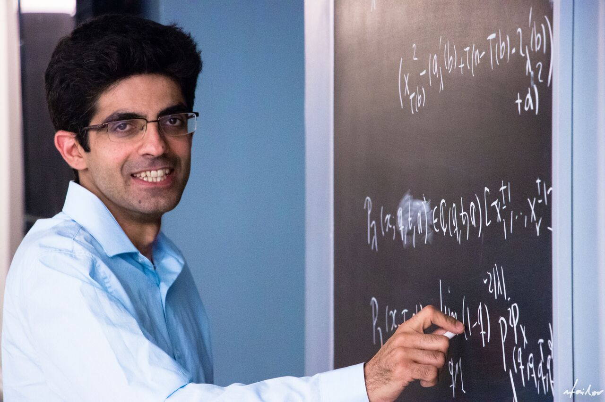

Professor
Department of Mathematics and Statistics
Office: STEM 639 |
|
• I am a member of the Algebra, Lie Theory, and Representation Theory Group at the University of Ottawa, and the Network of Ontario Lie Theorists. • The focus of my research is on representation theory: a central area of algebra, rich in deep and surprising connections to combinatorics, mathematical physics, and category theory. I am also interested in applications of algebraic tools in cryptography and quantum algorithms. • I am currently a member of the Editorial Board of the Canadian Journal of Mathematics/Canadian Mathematical Bulletin . • To view my short CV, which includes the list of projects of my former students, click here. Upcoming conference: I am co-organizing a workshop on Modern Methods in Representation Theory at the University of Ottawa, July 7–10, 2026. I am currently looking for postdoctoral fellows starting on July 2026. Interested applicants should submit their applications on MathJobs.Org and include my name as a contact faculty member. Research Projects for Graduate Students: I have openings for Ph.D. and M.Sc. students. Students with a strong undergraduate background, in particular in algebra, are invited to apply. Applicants who are interested in working under my supervision should mention my name on their application as the potential supervisor. Graduate students will be able to choose a project from a broad range of topics. For further information on our graduate program and the application process, click here. • If you are interested in doing research under my supervision, I highly recommend that you look at the research project reports written by my former students. You can find these reports on my Curriculum Vitae. • If you are considering graduate studies under my supervision, you are welcome to schedule an appointment with me to discuss project options. Research Projects for Undergraduate Students: I have several research projects for undergraduate students. Students will be supported financially by an NSERC Undergraduate Student Research Award , the Undergraduate Research Opportunity Program, or the Work–Study Program . Depending on the topic of the project, it may consist of one or more of the following: independent reading, writing a report, making a presentation, or running a computer experiment. You can contact me via e-mail for further information. • If you are interested in doing research under my supervision, I highly recommend that you look at the research project reports written by my former students. You can find these reports on my Curriculum Vitae. |